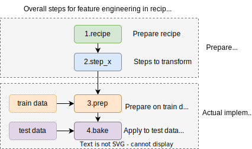

data(credit_data)
# Chia train & test
split <- initial_split(credit_data, prop = 8/10)
credit_train <- training(split)
credit_test <- testing(split)30 Feature Engineering
30.1 Giới thiệu
Khi xây dựng mô hình dự báo, ta phải cân bằng giữa độ chính xác và khả năng giải thích của mô hình. Khi xây dựng mô hình, để xử lý các feature - gia tăng độc chính xác nhưng vẫn đảm bảo tính khái quát hóa, ta có các kỹ thuật sau:
- Cho thêm biến vào mô hình
- Loại bỏ các biến có tương quan chặt với nhau hoặc chỉ có 1 giá trị, các biến này ít có ý nghĩa khi đưa vào mô hình
- Thay đổi các biến có sẵn bằng các nhóm biến phái sinh để mô hình tốt hơn - cách tiếp cận này gọi là
feature engineering.
Feature Engineering là quá trình thể hiện các biến đầu vào (variables) với những cách thức khác nhau để giúp cho tăng độ chính xác của mô hình dự báo.
Với mỗi mô hình, thuật toán khác nhau sẽ yêu cầu những cách thức triển khai và thay đổi biến đầu vào khác nhau. Do đó, khi lựa chọn cách thức biến đổi biến đầu vào, ta phải nắm rất rõ thuật toán và cách thức biến đổi dữ liệu theo từng trường hợp khác nhau. Đối với feature engineering, ta có thể chia làm 3 nhóm chính.
- Biến đổi các biến định dạng nhóm (categorical)
- Biến đổi các biến định dạng số (numeric)
- Biến đổi dữ liệu định dạng date
Nếu phân loại theo cách thức tạo ra biến mới, có thể có 3 cách:
- Biến đổi 1:1 - một biến gốc biến đổi thành một biến mới. Ví dụ:
logmin-max scale
- Biến đổi 1:n - một biến được biến đổi thành nhiều biến khác nhau. Ví dụ:
- Biến đổi dữ liệu dạng category thành
one hot encoding - Biến đổi dữ liệu dạng thời gian thành 3 biến: Ngày trong tuần, tháng, năm
- Biến đổi dữ liệu dạng category thành
- Biến đổi n:m - n biến gốc được biến đổi thành m biến mới. Ví dụ:
- Gộp 3 biến địa chỉ nhà, đường, quận thành kinh độ & vĩ độ
- Biến đổi thành nhóm biến mới theo PCA
Trong thực tế, nhóm biến đổi dữ liệu feature engieering dùng nhiều nhất là nhóm biến đổi 1:1 và 1:n. Bên cạnh đó, thực tế biến đổi dữ liệu còn dùng đến việc xử lý & tạo thêm (impute) các giá trị bị thiếu (missing value).

Các bước tính toán cơ bản của feature engineering dựa trên 3 bước
- Bước 1: Lựa chọn dữ liệu train để tính toán các tham số
- Bước 2: Khai báo các thuật toán phục vụ cho
feature engineering - Bước 3: Tính toán các chỉ số cho các thuật toán khác nhau cho
feature engineering - Bước 4: Áp dụng và biến đổi vào tập dữ liệu mới

Trong chương này, các kỹ thuật sử dụng trong feature engineering sẽ được dùng từ package recipes trong hệ sinh thái tidymodels với dữ liệu credit_data.
30.2 Loại biến
Khi chọn biến vào mô hình, ta cần loại bỏ các biến có các đặc điểm sau:
- Gần như chỉ có 1 giá trị (
near zero variance), ví dụ - 99% có giá trị là 1 - Các biến có tương quan cao với nhau
df <- data.frame(
x1 = rnorm(100, 2, 1),
x2 = c(rep(1, 98), 2,2)
) %>%
mutate(x3 = 5*x1 + rnorm(100, 0, 1))
df %>% head x1 x2 x3
1 3.945221 1 20.468961
2 3.482360 1 18.455339
3 2.302171 1 10.087575
4 3.271168 1 15.951454
5 1.730565 1 8.859781
6 2.983290 1 16.025558recipe(~., df) %>%
# Loại bỏ near zero variance
step_nzv(all_numeric()) %>%
# Loại bỏ các biến có correlation cao
step_corr(all_numeric()) %>%
prep %>%
bake(df) %>%
head# A tibble: 6 × 1
x3
<dbl>
1 20.5
2 18.5
3 10.1
4 16.0
5 8.86
6 16.0 30.3 Tạo biến mới - định dạng category
30.3.1 Tạo dữ liệu giả (dummy data)
Trong phương pháp này, toàn bộ các dữ liệu gốc được chuyển sang dạng 0-1. Tuy nhiên, dữ liệu mới được tạo ra sẽ ít hơn dữ liệu gốc 1 trường hợp. Bởi lẽ khi biết giá trị của 6 biến, ta có thể biết được giá trị của biến cuối cùng.
| Biến gốc | Mon | Tues | Wed | Thurs | Fri | Sat |
|---|---|---|---|---|---|---|
| Sun | 0 | 0 | 0 | 0 | 0 | 0 |
| Mon | 1 | 0 | 0 | 0 | 0 | 0 |
| Tues | 0 | 1 | 0 | 0 | 0 | 0 |
| Wed | 0 | 0 | 1 | 0 | 0 | 0 |
| Thurs | 0 | 0 | 0 | 1 | 0 | 0 |
| Fri | 0 | 0 | 0 | 0 | 1 | 0 |
| Sat | 0 | 0 | 0 | 0 | 0 | 1 |
zero-variance predictor: là biến chỉ có một giá trị. Khi xây dựng mô hình, ta cần loại biến này.
library(tidyverse)
library(tidymodels)
df <- data.frame(
y = c(1:7),
x = c("Mon", "Tue", "Wed", "Thu", "Fre", "Sat", "Sun")
)
df y x
1 1 Mon
2 2 Tue
3 3 Wed
4 4 Thu
5 5 Fre
6 6 Sat
7 7 Sunrecipe(y ~ ., data = df) %>%
step_dummy(x) %>%
prep() %>%
bake(df)# A tibble: 7 × 7
y x_Mon x_Sat x_Sun x_Thu x_Tue x_Wed
<int> <dbl> <dbl> <dbl> <dbl> <dbl> <dbl>
1 1 1 0 0 0 0 0
2 2 0 0 0 0 1 0
3 3 0 0 0 0 0 1
4 4 0 0 0 1 0 0
5 5 0 0 0 0 0 0
6 6 0 1 0 0 0 0
7 7 0 0 1 0 0 030.3.2 Tạo hash
Đối với các biến có rất nhiều nhóm (ví dụ: 200 chi nhánh trong ngân hàng), ta có 2 cách tiếp cận.
- Cách một, dựa vào kiến thức nghiệp vụ tự nhóm. Ví dụ, các chi nhánh ở Hà Nội sẽ đánh dấu là HN, ở Hồ Chí Minh là HCM, các chi nhánh còn lại là
Others. - Cách hai, sử dụng
hash function. Trong trường hợp này, các biến category sẽ được tạo thành một biến hoàn toàn mới có giá trị số. Xem ví dụ dưới đây.
|
Hash |
|---|---|
| belvedere tiburon | 58275378 |
| berkeley | 1166288024 |
Lưu ý: Việc sử dụng hàm hash để đảm bảo tính ngẫu nhiên trong việc sử dụng dữ liệu dạng factor
df <- data.frame(y = c(1:5),
x = c("a", "b", "c", "d", "e")) %>%
mutate(x_hash = map_chr(x, rlang::hash))
df %>% knitr::kable()| y | x | x_hash |
|---|---|---|
| 1 | a | 4d52a7da68952b85f039e85a90f9bbd2 |
| 2 | b | 9b7e35f569ac5aad3ebaf397666e2997 |
| 3 | c | a18f87b8a69b7cbc252aa9d73b1db9e2 |
| 4 | d | 7b733980a3a0c94d1d621ee556d92812 |
| 5 | e | 930020403d24f677ea7cdd40e3e113fb |
30.4 Tạo biến mới - định dạng số
Đối với các biến liên tục, khi xây dựng mô hình, ta sẽ gặp phải các vấn đề sau.
- Các biến có các đơn vị khác nhau. Ví dụ, tuổi có giá trị từ 15-75, thu nhập có giá trị từ 2 triệu VND đến 200 triệu VND
- Các biến bị lệch sang phải (skewness)
- Các biến có xuất hiện giá trị ngoại lai (outliers)
- Các biến có thể bị chặn trai hoặc chặn phải. Ví dụ, độ tuổi có giá trị không quá 80
Đối với các biến số, có ba nhóm kỹ thuật lớn biến đổi dữ liệu.
- Biến đổi 1:1 - một biến được biến đổi thành một biến khác - như
scale,center,log,sqrt,abs,discretize
30.4.1 Scale, normalize & center
Các kỹ thuật này thuộc cùng một họ, có 4 kỹ thuật lớn như sau:
Center: Chuẩn hóa dữ liệu để có tổng bằng 0: \(x_{new} = x - mean(x)\)Normalize: Chuẩn hóa về một scale: \(x_{new} = \frac{x}{\sqrt{\sum{x^2}/(n-1)}}\)Scale: Chuẩn hóa về z-score dạng \(x_{new} = \frac{x-\mu}{\sigma}\) với \(\mu = mean(x)\) và \(\sigma = sd(x)\)Min-max scale: Chuẩn hóa về 1 khoảng dữ liệu cụ thể \(x_{new} = \frac{x - min(x)}{max(x) - min(x)}\)
x <- 1:10
scale(x) %>% summary V1
Min. :-1.4863
1st Qu.:-0.7432
Median : 0.0000
Mean : 0.0000
3rd Qu.: 0.7432
Max. : 1.4863 mu <- mean(x)
sd_x <- sd(x)
# Bốn loại scale
scale_x <- (x - mu)/sd_x
center_x <- scale(x, center = T, scale = F)
norm_x <- x/sqrt(x^2 %>% sum/(length(x)-1))
min_max_x <- (x - min(x))/(max(x) - min(x))
data.frame(x, center_x, norm_x, scale_x, min_max_x) %>% knitr::kable()| x | center_x | norm_x | scale_x | min_max_x |
|---|---|---|---|---|
| 1 | -4.5 | 0.1528942 | -1.4863011 | 0.0000000 |
| 2 | -3.5 | 0.3057883 | -1.1560120 | 0.1111111 |
| 3 | -2.5 | 0.4586825 | -0.8257228 | 0.2222222 |
| 4 | -1.5 | 0.6115766 | -0.4954337 | 0.3333333 |
| 5 | -0.5 | 0.7644708 | -0.1651446 | 0.4444444 |
| 6 | 0.5 | 0.9173649 | 0.1651446 | 0.5555556 |
| 7 | 1.5 | 1.0702591 | 0.4954337 | 0.6666667 |
| 8 | 2.5 | 1.2231533 | 0.8257228 | 0.7777778 |
| 9 | 3.5 | 1.3760474 | 1.1560120 | 0.8888889 |
| 10 | 4.5 | 1.5289416 | 1.4863011 | 1.0000000 |
Các kỹ thuật trên có thể sử dụng với recipe với các nhóm hòm step_scale, step_range.
30.4.2 Các biến đổi toán học
Bên cạnh các kỹ thuật hay dùng với scale, các kỹ thuật hay dùng khác như:
step_log: Cho phép biến đổi \(x_{new} = log(x)\)step_inverse: Biến đổi \(x_{new} = \frac{1}{x}\)step_relu: Biến đổi dạng \(x_{new} = max(0, x)\)step_BoxCox: Cho phép biến đổi \(x^{*} = \left\{ \begin{array}{l l} \frac{x^{\lambda}-1}{\lambda\: \tilde{x}^{\lambda-1}}, & \lambda \neq 0 \\ \tilde{x} \: \log x, & \lambda = 0 \\ \end{array} \right.\)
df1 <- data.frame(
x1 = -3:3,
x2 = 1:7
)
df2 <- recipe(~., df1) %>%
step_relu(x1) %>%
step_log(x2) %>%
prep() %>%
bake(df1)| x1 | x2 |
|---|---|
| -3 | 1 |
| -2 | 2 |
| -1 | 3 |
| 0 | 4 |
| 1 | 5 |
| 2 | 6 |
| 3 | 7 |
| x1 | x2 | right_relu_x1 |
|---|---|---|
| -3 | 0.0000000 | 0 |
| -2 | 0.6931472 | 0 |
| -1 | 1.0986123 | 0 |
| 0 | 1.3862944 | 0 |
| 1 | 1.6094379 | 1 |
| 2 | 1.7917595 | 2 |
| 3 | 1.9459101 | 3 |
30.4.3 Biến đổi từ biến số sang dạng nhóm
Các cách biến đổi chia làm 2 nhóm:
- Chia theo số lượng quan sát đều nhau với
step_discretize - Chia theo các ngưỡng cut-off với
step_cut
df <- data.frame(x1 = rnorm(100, 0, 4),
x2 = runif(100, 1, 10))
# Transform
df_transform <- df %>%
recipe(~x1 + x2) %>%
step_discretize(x1,
num_breaks = 5) %>%
step_cut(x2, breaks = c(3, 5, 7)) %>%
prep() %>%
bake(df)
df_transform %>% summary x1 x2
bin1:20 [1.12,3]:20
bin2:20 (3,5] :22
bin3:20 (5,7] :24
bin4:20 (7,9.77]:34
bin5:20 30.5 Tạo biến mới - định dạng date
library(lubridate)
df <- data.frame(x = seq(ymd(20220101), ymd(20230101), by = "1 day"))
df %>% head x
1 2022-01-01
2 2022-01-02
3 2022-01-03
4 2022-01-04
5 2022-01-05
6 2022-01-06recipe(~x, df) %>%
step_date(x) %>%
prep %>%
bake(df)# A tibble: 366 × 4
x x_dow x_month x_year
<date> <fct> <fct> <int>
1 2022-01-01 Sat Jan 2022
2 2022-01-02 Sun Jan 2022
3 2022-01-03 Mon Jan 2022
4 2022-01-04 Tue Jan 2022
5 2022-01-05 Wed Jan 2022
6 2022-01-06 Thu Jan 2022
7 2022-01-07 Fri Jan 2022
8 2022-01-08 Sat Jan 2022
9 2022-01-09 Sun Jan 2022
10 2022-01-10 Mon Jan 2022
# ℹ 356 more rows30.6 Xử lý dữ liệu bị thiếu (missing value)
Khi xây dựng mô hình, ta thường xuyên gặp trường hợp dữ liệu bị thiếu ở 1 số quan sát. Các cách xử lý thông thường như sau:
- Loại bỏ các quan sát bị thiếu
- Thay thế các quan sát bị thiếu bằng giá trị trung bình (
mean), trung vị (median) với biến liên tục hoặcmodevới biếncategory - Sử dụng
knnđể thay thế các quan sát bị thiếu bằng các quan sát lân cận gần nhất
# Dữ liệu credit_data
credit_data %>%
select(Status, Home, Income, Job) %>%
summary Status Home Income Job
bad :1254 ignore : 20 Min. : 6.0 fixed :2805
good:3200 other : 319 1st Qu.: 90.0 freelance:1024
owner :2107 Median :125.0 others : 171
parents: 783 Mean :141.7 partime : 452
priv : 246 3rd Qu.:170.0 NA's : 2
rent : 973 Max. :959.0
NA's : 6 NA's :381 credit_test %>%
select(Home, Income, Job, Status) %>%
summary Home Income Job Status
ignore : 3 Min. : 16.0 fixed :578 bad :246
other : 56 1st Qu.: 88.0 freelance:205 good:645
owner :447 Median :120.0 others : 33
parents:151 Mean :142.9 partime : 74
priv : 41 3rd Qu.:170.0 NA's : 1
rent :193 Max. :830.0
NA's :68 # Kết quả sau khi impute
recipe(Status ~ Home + Income + Job, data = credit_train) %>%
step_impute_median(Income) %>%
step_impute_mode(Job) %>%
step_impute_knn(Home) %>%
prep() %>%
bake(credit_test) %>%
summary Home Income Job Status
ignore : 3 Min. : 16.0 fixed :579 bad :246
other : 56 1st Qu.: 90.0 freelance:205 good:645
owner :447 Median :125.0 others : 33
parents:151 Mean :141.5 partime : 74
priv : 41 3rd Qu.:164.5
rent :193 Max. :830.0